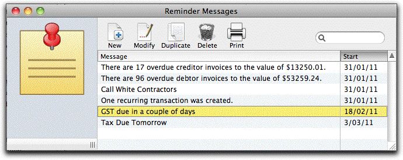
Users, Privileges & SecurityThe Reminder Messages list will be displayed.
Choose Edit>Delete Message
You will be asked for confirmation.
Click Delete to delete the message
1 This is not how it was done in versions of MoneyWorks prior to 5.0. ↩︎
2 You can use the Fill Right command to spread it out over the whole financial year↩︎
3 Laphroaig↩︎
For MoneyWorks Gold/Datacentre users, even if you have only one computer, you may have more than one person who will have access to the accounts data. In this situation it is probably desirable to control the privileges of each person. For example, you may want to have your sales reps entering quotes and sales orders, but you probably don't want them to be able to pay your suppliers, or see your payroll transactions.
In MoneyWorks Gold/Datacentre you can:
Set up multiple user names, each with its own password and privileges. People can only access your accounts if they have a user name and password. Their privileges control what types of data and what MoneyWorks functions they can access.
Allow only specified users to access nominated reports and forms (invoices, purchase orders etc) by the use of Signing , and, in reports, by the Check Privilege control.
Set up roles, each role having its own set of privileges. You then assign a user to a role, and they will get the privileges given to that role. For example, you might have a role called "Payables", and you would assign this role to each member of your accounts payable team.
Set up Security Levels on your general ledger accounts and users, so that users cannot access certain accounts (and transactions) unless they have the required security level.
The first step in securing your accounting data is to password protect the file, so that only people who know the user and password can access it. To password protect your file:
Choose Users and Security from the File menu
The Password Control dialog box will appear
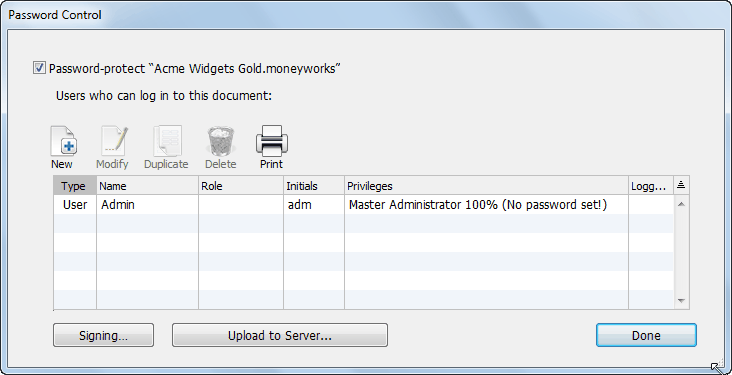
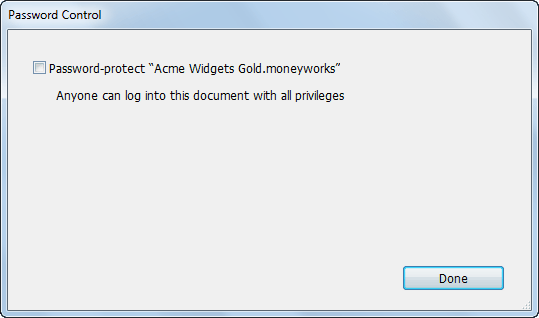
Note The Users and Security command is only available to a user with administrator privileges. Other users will see the command as Change Password.
Turn on the Password Protect “Document Name” check box
The dialog box will expand to show the user list.
MoneyWorks has already inserted a user called Admin who has all privileges. The first thing you should do is assign a password to this user. You may also want to change the user name and initials from Admin/adm to something else.
The User Privileges dialog box for Admin will open. Admin is the Master Administration User who always has access to everything (you can’t change Admin’s privileges). You should at least assign a password for this user, and you can also change the name and set the initials.
Change the User Name and Initials if desired
The initials may be up to 3 characters, and can be used in place of the User Name when you log in. The initials of the currently logged-in user are permanently recorded against every transaction or job sheet entry that user enters and/or posts. When sharing on the network, the initials are also recorded for the purposes of the Rollback command.
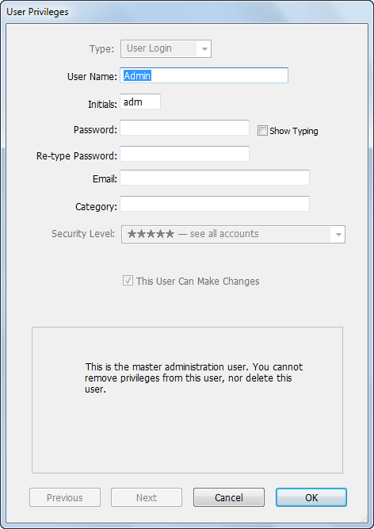
Specify the user’s email address in the Email fieldThis will be used as the Reply To email address for emails created from MoneyWorks (and for the BCC address for emails sent via the inbuilt SMTP)—see Emailing.
If you are connected to MoneyWorks Now (the MoneyWorks cloud service), and want this user to also be able to access the file, turn on the Enable MoneyWorks Now Access check box
An email will be automatically sent to the user inviting them to access the file. They must click the Activate
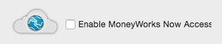
MoneyWorks Access button in the body of the email to be able to access the file.Note: The check box is only available if you are connected to a MoneyWorks Now file.
field
The MoneyWorks Now access checkbox is only available when connected to a MoneyWorks Now file
Note: Each user must have a unique name and set of initials. This if both Joan Smith and Jack Straw are set up as users, they cannot both have their initials as “JS”.
Type a password into the Password field
The password you type will show up as bullets (••••) or asterisks (****).
If no-one is looking, you can turn on the Show Typing check box which will let you see the password instead of •••• or ****
Note: User Names and passwords are case-insensitive in MoneyWorks.
This field is intended to provide information about the user that can be accessed from reports and scripts. For example, a report may self-configure depending on whether the user category is “SalesPerson” or “Manager”.
The category can be up to 31 characters long, allowing you to overload the data in the field. For example, you might use a convention of “branch:reportsTo”, so a report or script knows that user “JOE”, who has a category of “NY:ANN”, is in the New York office and reports to “ANN”. Thus a sales report that Joe runs could automatically print out just for New York.
Similarly a script could check that any purchase orders raised by Joe have been approved by user ANN.
The Master Administration User is now secured with a password. Now we can set up additional users who will probably have different privileges.
Before you set up additional users, it might be an idea to consider setting up roles for each of your types of users (e.g. sales, payables, receivables). A role can be assigned to different users, so if you have four sales staff for example, you don’t need to set up their privileges separately.
To create a new role:
A new User Privileges window will open.
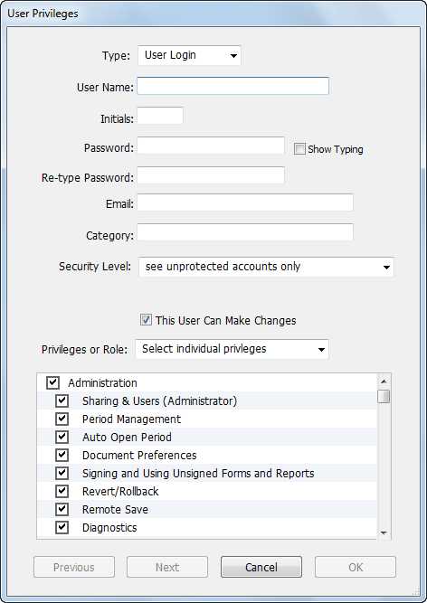
The contents of the window will change to show the role information.
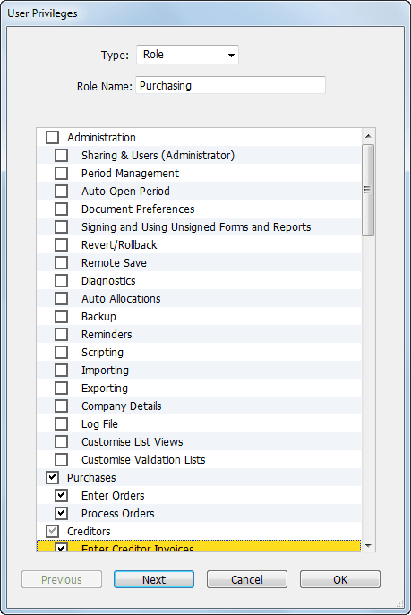
This is the name that you will see in the user/role list. It should be something descriptive to indicate the type of users who should be assigned to the role.
These are the operations that users with the role can perform. A table of privileges is provided here.
Tip: If the role is largely the same as a previously created role, just duplicate the other role, assign a new name and turn on/off the appropriate privileges.
A new User Privileges window will open.
This is a normal user. You can either assign a role (with its associated privileges), or you give this user their own, unique privileges. A table of privileges is provided here.
Type a user name, initials and (if required) a password for this user (remember the password needs to be typed twice)
Note: It is possible to leave the password for a user blank. If security is not a concern then feel free to do this.
If this user is only going to be allowed read-only access, turn off the This User Can Make Changes check box
This determines what general ledger accounts and transactions they can view. Users cannot see accounts or transactions which have a higher security level (more stars).
Note: The category and the security are assigned to the user, not the role. So different users with the same role can have different categories and/or security levels.
If you want to assign a role to this user:
Choose the role from the Privileges or Role pop-up menu If you want this user to have their own privilege set:
Turn off any privileges that are to be denied this user
Click OK to accept the changes
Note: The first privilege under the Administration heading is Users and Security. If you are denying any privileges to a user, this must be one of the ones you deny. Otherwise the user can simply grant themselves any privileges they want.
Another important privilege to consider is the Form & Report Signing privilege. If access to any form or report is to be denied to a user, this privilege must be turned off for that user. You can then use Signing to allow particular forms or reports to be used by the user .
Typically you will allow privileges according to the job description of the user. Someone whose responsibility is limited to entry of sales orders should probably have all privileges denied except those under the Sales heading, and possibly Enter Invoices. Such a user may require a signed invoice form in order to be able to print invoices for sales. See Protecting Reports and Forms by Signing for further information.
Tip: You can turn off or on all of the check boxes under a heading in the list by clicking the checkbox next to that heading. If, under any particular heading, some of the privileges are allowed and some denied, the check box for the heading will show a dash (Macintosh) or a grey tick (Windows).
Note: If a user attempts to access a command for which they do not have privileges a message will be displayed.
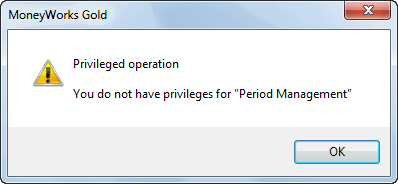
If the user has been assigned a role, change the role in the Privileges or Role pop-up menu
Click OK to accept the changes to the user
If the user is currently logged in over the network, their privileges will be updated pretty much immediately. If you have changed their user name or initials, these changes will not take effect until they next log in—their old initials will still be recorded against transactions they enter/post.
The privileges set for that role will be displayed
Click OK to save the new privilege set
When users with that role next log in, they will get the altered privileges.
Note that you can also change the name of the role without affecting the membership of that role.
The Master Administrator user cannot be deleted.
A role can only be deleted if there are no users assigned to it.
As a user: You can change your own password by choosing Change Password in the File menu. This displays the Change Password dialog described below.
As an administrator: Provided you have the Users and Security privilege on, you can change or remove other user’s passwords by clicking the Change Password button in the User Privileges window—this displays the Change Password dialog.
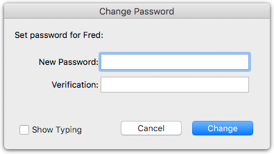
Enter the new password in both the New Password and Verification fields, and click OK
The password you enter must be the same.
To remove an existing password leave these two fields empty.
When a document has the Password Protect option set you must supply a user name (and password, if one has been specified), every time you Open or Connect to the document. In this situation, the Log In dialog will appear
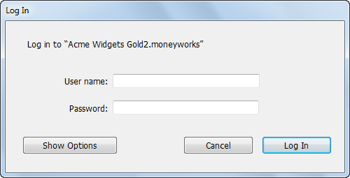
MoneyWorks will remember the last user name you logged in with on this computer and enter it for you.
In the Password field, type your password
Note: User Names and passwords are case-insensitive in MoneyWorks.
Note: If your password is stored in your keychain (Mac) or your Vault (Windows) and this is unlocked, your password will be entered for you when you tab out of the User name field. If your keychain/vault is locked, MoneyWorks will invite you to unlock it. If your User Name was also pre-entered for you then there’s nothing to do - just click Log In.
Additional options are available if you click Show Options
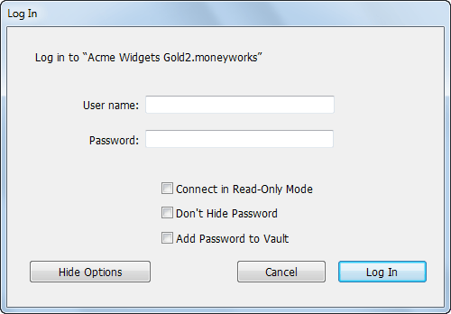
Connect in Read Only Mode This opens or connects to the document with read- only privileges. You will not be able to make changes. Note that this is not the same as opening a read-only document (one that is locked or stored on a read-only volume), since the file will still be updated and some changes may be made automatically by MoneyWorks—such as creating recurring transactions.
Don’t Hide Password This makes the text in the Password field readable (instead of •••• or ****). Use this option to check that you are typing what you think you are typing, for example if a log in fails due to an incorrect password. If you get unexpected characters showing when you try to type your password, check carefully that there is not a book resting on your keyboard and that none of the keys on your keyboard are stuck down.
Add Password to Keychain/Vault Click this if you want to store the password you have typed in your keychain (Mac) or vault (Windows). The password will be associated with the document you are opening and the user name you have typed.
Click Log In
The document will open.
Now that you are logged in, MoneyWorks will enforce any privileges, or rather, lack of privileges that you might have. If you try to perform any operation that is not allowed in your privileges list, you will get a message informing you that you do not have privileges for the operation.
Since MoneyWorks allows so much customisability of reports and forms, to the extent of being able to include information from pretty much anywhere in the database, it is necessary to be able to secure this avenue of data extraction.
The administrator can restrict access to reports and forms for particular users by a mechanism known as signing. This is controlled by the Signing and Using Unsigned Forms and Reports administration privilege. If you do not want a user to have access to reports and forms, you should turn this privilege off for that user. You can then make specific reports and forms available to that user (for the current document) by signing them for that user.
Note: Forms and Reports are signed to be used by particular users with a particular document.
Note: A user who does have the Signing and Using Unsigned Forms and Reports privilege may print any report or form without it having to be signed first, provided the report is not subject to a Check Privilege control.
With single-user MoneyWorks, customised forms and reports are stored in a folder called MoneyWorks Custom Plug-Ins that is in the same directory as the MoneyWorks accounts data file.
With multi-user MoneyWorks, the accounts data file resides on the server, and cannot be seen from a client computer. Therefore, for clients who connect to a shared MoneyWorks document, MoneyWorks will provide access to custom reports and forms that it finds in the MoneyWorks Custom Plug-Ins folder—see Managing Your Plug-ins for information on this). If you are logging into a document hosted by MoneyWorks Datacentre, the server will deliver any custom plug-ins automatically.
On the users computers, log in to the document using your administrator user name, and choose File>Users and Security
Click the Signing button to display the Signing dialog box
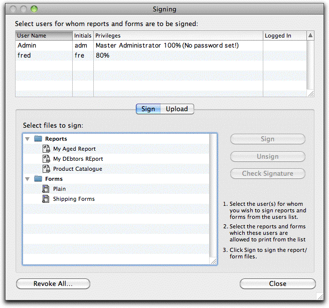
Select the user(s) for whom you wish to sign files
Select the report and form files that you wish to sign.
The list will show all of the custom and standard forms and reports residing in the MoneyWorks Standard Plug-Ins and MoneyWorks Custom Plug-Ins folders on the computer that you are sitting at. You cannot sign standard reports, but note that access to these is generally controlled by one of user privileges. For example you cannot run reports based on the general ledger unless you have the Account Enquiry privilege.
Click the Sign button
To see which users of the current document the form/report is currently signed for, select the file and click Check Signature.
Note: The form is signed on the local machine only. You will need to upload it to Datacentre (Uploading Reports and Forms) or manually copy it to Gold workstations.
To unsign a document You can unsign a document for particular users by following the steps for signing, but click Unsign instead of Sign.
If you are doing the signing on a computer other than the one that will be used by the unprivileged user, you will need to copy the files that you have signed into the MoneyWorks Custom Plug-Ins folder on that user’s computer.
If you are using MoneyWorks Datacentre you can use the Upload tab to upload the signed file to the server for automatic distribution to clients the next time they log in. See Uploading Reports and Forms.
The Revoke All button will revoke all signatures ever issued for the accounts document.
Note: If changes are made to forms and reports (even using an earlier version of MoneyWorks which does not know about signing) this will invalidate the signature. They will need to be re-signed before they can be used by unprivileged users.
Privileges protect functional areas of your MoneyWorks file from being accessed by unauthorised users. So for example a purchasing officer might be able to only view/modify purchase orders, purchase invoices and payments.
But payments encompass more than just purchases. For example a payroll transaction is normally recorded as payment, and you don’t necessarily want your purchasing officer to have access to your payroll.
This is where security levels come in. They “cut across” the functional parts to
The account’s security level is also stamped onto each line of each transaction, and the transaction’s security level is set to the highest security level of the entered lines. This means that a user cannot see transactions that use accounts with a higher security setting.
Note: The security check on transactions applies to entered lines only, not the contra account (bank account, payable/receivable control account), or any lines added automatically by MoneyWorks, such as GST/VAT/Tax lines, stock adjustments and currency lines.
Security levels for accounts (and hence transactions) are set and maintained in the Account List.
Important: When you change the security level on an account, MoneyWorks needs to update the security level on all detail lines that use that account, and their corresponding transactions—depending on the size of your data file, this may take some time to apply the changes.